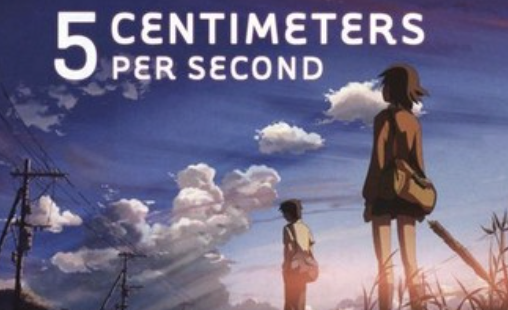

4. 5 Centimeters Per Second

5 Centimeters per Second is a 2007 anime film by Makoto Shinkai that follows the story of two childhood friends, Takaki and Akari, and their long-distance relationship as they grow up. It's an emotional, three-part drama about young love, missed connections, and the slow drifting apart of people over time, depicted with breathtaking visuals. The title refers to the speed at which cherry blossom petals fall, symbolizing how people slowly drift apart.